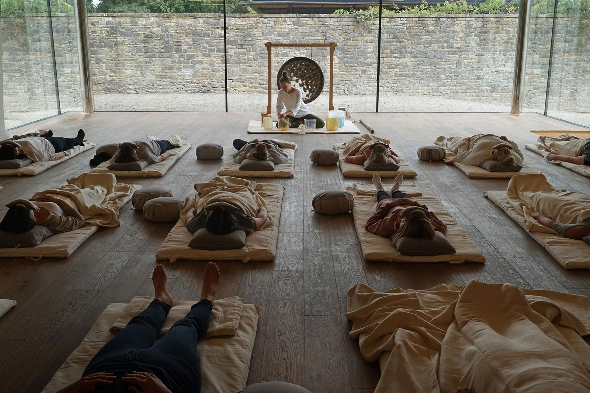

ZUMBA

Events like Daybreaker and ZUMBA have paved the way for wellness raves and sober morning dance party events. With live music, non-alcoholic drinks, and movement, you can create your own morning dance party events. Fitness events are ideal for doing something out of the ordinary for your members. They give you a chance to create a unique member experience. If you have dance or Zumba classes, a morning dance event would be ideal for your audience.
Zumba is intended as a total-body cardio and aerobic workout, which provides a large calorie consumption. One 2012 study found that a participant burns 300 to 900 kcal with an hour-long Zumba exercise.
Because Zumba offers different options, proponents of the Zumba program claim that it is safe for all ages, meaning anyone can participate.[28] Some of the classes are specifically aimed at elderly people.
Besides its high calorie burning benefit, Zumba can help lower the risk of heart disease, reduce blood pressure and LDL cholesterol, and increase HDL cholesterol.
Marathon
The focus of the training program will depend on your members and target audience. If you have many runners and there’s a local half marathon, you may get a sense that a half marathon training program would be beneficial. The best way to find this out is to survey your existing members and evaluate fitness levels so you can build an effective program. A half marathon training program can run over several weeks and give participants personalized programs to help them achieve their goals. A training program also works for a triathlon, cycling, rowing, and sports, if you have the demand.
The marathon is a long-distance foot race with a distance of 42.195 kilometres (26 miles 385 yards),usually run as a road race, but the distance can be covered on trail routes. The marathon can be completed by running or with a run/walk strategy. There are also wheelchair divisions. More than 800 marathons are held throughout the world each year, with the vast majority of competitors being recreational athletes, as larger marathons can have tens of thousands of participants.
Healthy Recipe Special Events

Nutrition is a huge part of fitness and living a healthy life. It’s also something that is a big obstacle for many. Fitness is a part of the overall health puzzle alongside nutrition and wellness. A healthy cooking demonstration or recipe tasting event is beneficial for members to learn more about food. The event also positions you as an authority and showcases your want to help people improve their health & fitness. In turn, this can increase brand awareness and member satisfaction. You have the option to stream fitness events as well so your home members can join too and follow along.
Fitness and Wellness Retreats

Retreats, wellness tourism, and fitness holidays are growing sectors. Although they require more work and time to plan, they can bring in a steady stream of income to the business. Weekends away, Pilates retreats, and mindfulness breaks give members the opportunity to connect with your brand on a personal level and elevate the brand. Fitness retreats can target both members and non-members, and include locations all over the world.